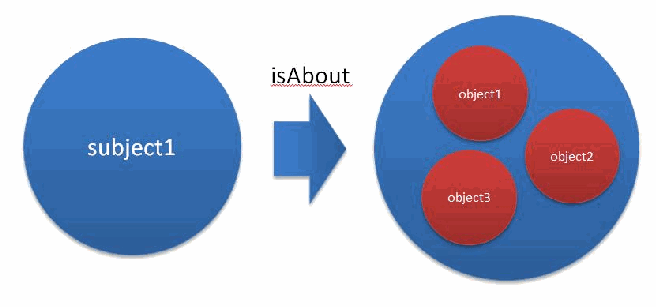
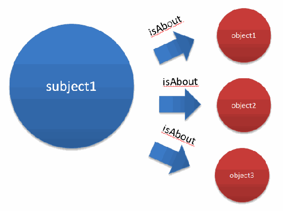
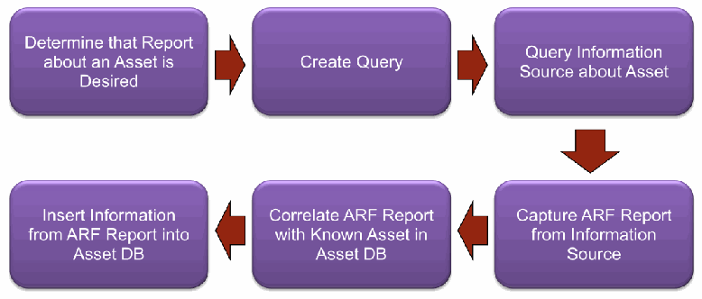

NIST IR 7694 日本語訳
英語タイトル : Specification for Asset Reporting Format 1.1日本語タイトル : Asset Reporting Format 1.1 の仕様
公開日 : 2011-06-21
原文URL : https://csrc.nist.gov/pubs/ir/7694/final
翻訳編集 : 自動生成（有志による非公式の日本語訳）, 原文取得日 : 2026-10-31, 訳文 : 224 / 229 ブロック
[要約] NIST IR 7694 は、資産に関する情報の転送形式と、資産と報告書の間の関係を表現するためのデータモデルである Asset Reporting Format（ARF）バージョン 1.1 を定義する仕様です。この標準化されたデータモデルにより、組織内および組織間で、資産情報の報告、相関、融合が容易になり、ARF はベンダーや技術に依存せず、IT 資産に限らずあらゆる種類の資産に使用できるとされています。本書は、ARF バージョン 1.1 の紹介、データモデルの定義、ARF に準拠するための適合要件の文書化を適用範囲としています。想定読者には、資産報告アプリケーションを開発している製品ベンダーや、資産報告のための相互運用可能な機能の構築に関心のある組織が含まれます。
［NIST のロゴ。公的な標章のため、この非公式サイトには掲載していません。原本 PDF を参照してください。］
NIST Interagency Report 7694
NIST Interagency Report 7694
Specification for the Asset Reporting Format 1.1
Asset Reporting Format 1.1 の仕様
Adam Halbardier
David Waltermire
Mark Johnson
Adam Halbardier
David Waltermire
Mark Johnson
Specification for the Asset Reporting Format 1.1
Asset Reporting Format 1.1 の仕様
NIST Interagency Report 7694
NIST Interagency Report 7694
Adam Halbardier
David Waltermire
Mark Johnson
Adam Halbardier
David Waltermire
Mark Johnson
COMPUTER SECURITY
コンピュータセキュリティ
Computer Security Division
Information Technology Laboratory
National Institute of Standards and Technology
Gaithersburg, MD 20899-8930
コンピュータセキュリティ部門
情報技術研究所
米国国立標準技術研究所
Gaithersburg, MD 20899-8930
June 2011
2011年6月
U.S. Department of Commerce
Gary Locke, Secretary
米国商務省
Gary Locke 長官
National Institute of Standards and Technology
Dr. Patrick D. Gallagher, Director
米国国立標準技術研究所
Dr. Patrick D. Gallagher 所長
Reports on Computer Systems Technology
コンピュータシステム技術に関する報告書
The Information Technology Laboratory (ITL) at the National Institute of Standards and Technology (NIST) promotes the U.S. economy and public welfare by providing technical leadership for the nation’s measurement and standards infrastructure. ITL develops tests, test methods, reference data, proof of concept implementations, and technical analysis to advance the development and productive use of information technology. ITL’s responsibilities include the development of technical, physical, administrative, and management standards and guidelines for the cost-effective security and privacy of sensitive unclassified information in Federal computer systems. This Interagency Report discusses ITL’s research, guidance, and outreach efforts in computer security and its collaborative activities with industry, government, and academic organizations.
米国国立標準技術研究所（NIST）の情報技術研究所（ITL）は、国の計測・標準の基盤に対して技術的なリーダーシップを提供することにより、米国の経済と公共の福祉を推進しています。ITL は、情報技術の発展と生産的な利用を進めるために、試験、試験方法、参照データ、概念実証の実装、技術分析を開発しています。ITL の責務には、連邦コンピュータシステムにおける機密扱いでない取扱注意情報の、費用対効果の高いセキュリティとプライバシーのための、技術的、物理的、管理的、運用管理上の標準およびガイドラインの開発が含まれます。この Interagency Report は、コンピュータセキュリティにおける ITL の研究、ガイダンス、普及活動と、産業界、政府、学術機関との協力活動について論じます。
National Institute of Standards and Technology Interagency Report 7694
29 pages (June 2011)
National Institute of Standards and Technology Interagency Report 7694
29 ページ（2011年6月）
Certain commercial entities, equipment, or materials may be identified in this document in order to describe an experimental procedure or concept adequately. Such identification is not intended to imply recommendation or endorsement by the National Institute of Standards and Technology, nor is it intended to imply that the entities, materials, or equipment are necessarily the best available for the purpose.
本書では、実験の手順や概念を適切に説明するために、特定の商業的組織、機器、資材が示されている場合があります。そのような記載は、米国国立標準技術研究所による推奨や保証を意味するものではなく、それらの組織、資材、機器が当該目的に利用可能な最良のものであると必ずしも意味するものでもありません。
Acknowledgments
謝辞
The authors, Adam Halbardier of Booz Allen Hamilton, David Waltermire of the National Institute of Standards and Technology (NIST) and Mark Johnson of Booz Allen Hamilton, wish to thank their colleagues who reviewed drafts of this document and contributed to its technical content. The authors would like to acknowledge Paul Cichonski and Harold Booth of NIST, John Wunder of the MITRE Corporation, Karen Scarfone of Scarfone Cybersecurity, Joseph Wolfkiel of the Defense Information Systems Agency (DISA), Jim Ronayne of Varen Technologies, Gary Newman of Belarc, and Rhonda Farrell of Booz Allen Hamilton for their keen and insightful assistance throughout the development of this document.
著者である Booz Allen Hamilton の Adam Halbardier、米国国立標準技術研究所（NIST）の David Waltermire、Booz Allen Hamilton の Mark Johnson は、本書の草案をレビューし、その技術的内容に貢献してくれた同僚に感謝します。著者は、本書の作成を通じて鋭く洞察に富んだ支援をしてくれた、NIST の Paul Cichonski と Harold Booth、MITRE Corporation の John Wunder、Scarfone Cybersecurity の Karen Scarfone、Defense Information Systems Agency（DISA）の Joseph Wolfkiel、Varen Technologies の Jim Ronayne、Belarc の Gary Newman、Booz Allen Hamilton の Rhonda Farrell に謝意を表します。
Abstract
概要
This specification describes the Asset Reporting Format (ARF), a data model for expressing the transport format of information about assets and the relationships between assets and reports. The standardized data model facilitates the reporting, correlating, and fusing of asset information throughout and between organizations. ARF is vendor and technology neutral, flexible, and suited for a wide variety of reporting applications. The intent of ARF is to provide a uniform foundation for the expression of reporting results, fostering more widespread application of sound IT management practices. ARF can be used for any type of asset, not just IT assets.
本仕様は、資産に関する情報の転送形式と、資産と報告書の間の関係を表現するためのデータモデルである Asset Reporting Format（ARF）を説明します。この標準化されたデータモデルにより、組織内および組織間で、資産情報の報告、相関、融合が容易になります。ARF はベンダーや技術に依存せず、柔軟で、幅広い報告アプリケーションに適しています。ARF の意図は、報告結果を表現するための統一的な基盤を提供し、健全な IT 管理の実践のより広範な適用を促すことです。ARF は IT 資産に限らず、あらゆる種類の資産に使用できます。
Trademark Information
商標情報
All registered trademarks or trademarks belong to their respective organizations.
すべての登録商標または商標は、それぞれの組織に帰属します。
Table of Contents
目次
List of Figures and Tables
図表一覧
1. Introduction
1. はじめに
The Asset Reporting Format (ARF) is a data model to express the transport format of information about assets and the relationships between assets and reports. The standardized data model facilitates the reporting, correlating, and fusing of asset information throughout and between organizations. ARF is vendor and technology neutral, flexible, and suited for a wide variety of reporting applications.
Asset Reporting Format（ARF）は、資産に関する情報の転送形式と、資産と報告書の間の関係を表現するためのデータモデルです。この標準化されたデータモデルにより、組織内および組織間で、資産情報の報告、相関、融合が容易になります。ARF はベンダーや技術に依存せず、柔軟で、幅広い報告アプリケーションに適しています。
ARF serves an important role in assisting organizations with sharing information about assets, both internally and externally. Data about assets often exists across many locations within an organization (e.g., databases, sensors). In addition, different groups within the organization often have different views of the information, and people within those groups often capture only the information pertinent to them. ARF helps enable organizations to quickly correlate the information from those disparate data sources, resulting in a more holistic view of an asset. Asset identification, defined in [Asset Identification], supports asset correlation, which allows organizations to match different representations of the same asset. By tying together asset identification, reports, and report requests, different ARF reports can be correlated by the asset identification component, and the reports can be fused. Conforming to ARF enhances an organization’s ability to increase its situational awareness related to its asset infrastructure through better correlation and fusion across the enterprise.
ARF は、組織が資産に関する情報を内部および外部で共有するのを支援するうえで、重要な役割を果たします。資産に関するデータは、組織内の多くの場所（例: データベース、センサー）に存在することがよくあります。加えて、組織内の異なるグループは情報について異なる見方をしていることが多く、それらのグループ内の人々は、自分に関係のある情報だけを取得していることが多くあります。ARF は、組織がこうした分散したデータソースの情報を迅速に相関させ、資産のより総合的な見方を得るのに役立ちます。[Asset Identification] で定義される資産識別は資産の相関を支え、組織が同じ資産の異なる表現を照合できるようにします。資産識別、報告書、報告要求を結び付けることで、異なる ARF の報告書を資産識別の構成要素によって相関させることができ、報告書を融合できます。ARF に適合することで、組織は、エンタープライズ全体でのより優れた相関と融合により、資産基盤に関する状況認識を高める能力を強化できます。
In addition, ARF standardizes the way in which products produce and receive reports relating to assets, providing a common structure for asset reporting capabilities. Products that conform to ARF support a certain level of data interoperability, regardless of the domain the product is supporting, which better enables cross-product automation processing. ARF provides a common structure for relating reports about assets to assets, report requests, and other reports, leveraging the capabilities of other specifications to define the low-level data elements of the report. Much like the TCP/IP protocol that focuses on defining the structure of the message while leaving the detailed format of the payload to other specifications (e.g., HTTP, FTP, Java Messaging Service), ARF does not define the detailed data elements of the message. As such, ARF is intended to be free of any specific use case.
加えて、ARF は、製品が資産に関する報告書を作成し受け取る方法を標準化し、資産報告機能に共通の構造を提供します。ARF に適合する製品は、その製品が対象とする分野にかかわらず、一定水準のデータ相互運用性をサポートし、これにより製品間の自動化処理が一段と可能になります。ARF は、報告書の低水準のデータ要素を定義するために他の仕様の機能を活用しつつ、資産に関する報告書を、資産、報告要求、他の報告書と関連付けるための共通の構造を提供します。メッセージの構造の定義に焦点を当て、ペイロードの詳細な形式は他の仕様（例: HTTP、FTP、Java Messaging Service）に任せる TCP/IP プロトコルとよく似て、ARF はメッセージの詳細なデータ要素を定義しません。そのため、ARF は特定のユースケースに縛られないことを意図しています。
Since ARF exists at a level above the detailed data formats such as the eXtensible Configuration Checklist Description Format (XCCDF) and the Open Vulnerability and Assessment Language (OVAL), products from various domains, supporting various use cases, can conform to ARF while continuing to support their domains. Those products, which were once incompatible, would then share a level of interoperability. In this way, ARF cuts across domains within an enterprise, enabling data interoperability across disparate products.
ARF は、eXtensible Configuration Checklist Description Format（XCCDF）や Open Vulnerability and Assessment Language（OVAL）のような詳細なデータ形式より上の水準に存在するため、さまざまなユースケースをサポートするさまざまな分野の製品が、それぞれの分野のサポートを続けながら ARF に適合できます。かつては互換性のなかったそれらの製品は、一定水準の相互運用性を共有することになります。このように、ARF はエンタープライズ内の分野を横断し、異なる製品の間でのデータ相互運用性を可能にします。
1.1 Purpose and Scope
1.1 目的と適用範囲
The purpose of this document is to define the Asset Reporting Format (ARF) specification, a data model to express the transport format of information about assets and the relationships between assets and reports. The scope of this document is to give an introduction to ARF version 1.1, define ARF’s data model, and document the conformance requirements to comply with ARF. Other versions of ARF and the associated component specifications, including emerging specifications and future versions, are not addressed here. Future versions of ARF will be defined in distinct revisions of this document, each clearly labeled with a document revision number and the appropriate ARF version number.
本書の目的は、資産に関する情報の転送形式と、資産と報告書の間の関係を表現するためのデータモデルである Asset Reporting Format（ARF）の仕様を定義することです。本書の適用範囲は、ARF バージョン 1.1 の紹介、ARF のデータモデルの定義、ARF に準拠するための適合要件の文書化です。ARF の他のバージョンや関連する構成要素の仕様（新たに現れる仕様や将来のバージョンを含みます）は、本書では扱いません。ARF の将来のバージョンは、本書の個別の改訂版で定義され、それぞれに文書の改訂番号と該当する ARF のバージョン番号が明記されます。
1.2 Audience
1.2 想定読者
The intended audience for this specification includes product vendors who are developing asset reporting applications, particularly those that will interoperate with other asset reporting solutions, as well as organizations interested in building and tailoring customized, interoperable capabilities for asset reporting.
本仕様の想定読者には、資産報告アプリケーションを開発している製品ベンダー（特に、他の資産報告ソリューションと相互運用するもの）のほか、資産報告のための、カスタマイズされた相互運用可能な機能の構築と調整に関心のある組織が含まれます。
1.3 Document Structure
1.3 文書の構成
The remainder of this document is organized into the following major sections:
本書の残りの部分は、次の主要な節で構成されています。
•Section 2 defines the terms used within this specification and provides a list of common abbreviations.
•第 2 節は、本仕様で使われる用語を定義し、一般的な略語の一覧を示します。
•Section 3 describes how this specification relates to other standards and specifications.
•第 3 節は、本仕様と他の標準および仕様との関係を説明します。
•Section 4 defines the conformance requirements for ARF.
•第 4 節は、ARF の適合要件を定義します。
•Section 5 provides an overview of the ARF data model constructs.
•第 5 節は、ARF のデータモデルの構成要素の概要を示します。
•Section 6 defines the relationships described in ARF.
•第 6 節は、ARF で記述される関係を定義します。
•Section 7 defines the mechanism to link a report to an ARF object.
•第 7 節は、報告書を ARF オブジェクトに関連付ける仕組みを定義します。
•Appendix A defines possible use-cases for ARF.
•付録 A は、ARF の想定されるユースケースを定義します。
•Appendix B documents references to documents referenced normatively in ARF.
•付録 B は、ARF が規範として参照する文書への参照を記載します。
•Appendix C describes a sample workflow using ARF.
•付録 C は、ARF を使用したワークフローの例を説明します。
•Appendix D provides a sample XML file of an ARF report.
•付録 D は、ARF の報告書の XML ファイルの例を示します。
1.4 Document Conventions
1.4 文書の表記規則
Throughout this specification, whenever a specific term from the data model is referenced, as defined in section 5, the term is written in Courier New font. When referencing a specification listed in Appendix B, the name will be written between brackets, such as [Asset Identification].
本仕様の全体を通じて、第 5 節で定義されているデータモデルの特定の用語を参照する場合は、その用語を Courier New フォントで表記します。付録 B に挙げた仕様を参照する場合は、名称を [Asset Identification] のように角括弧で囲んで表記します。
The key words “MUST”, “MUST NOT”, “REQUIRED”, “SHALL”, “SHALL NOT”, “SHOULD”, “SHOULD NOT”, “RECOMMENDED”, “MAY”, and “OPTIONAL” in this document are to be interpreted as described in [RFC 2119].
本書におけるキーワード “MUST”、“MUST NOT”、“REQUIRED”、“SHALL”、“SHALL NOT”、“SHOULD”、“SHOULD NOT”、“RECOMMENDED”、“MAY”、“OPTIONAL” は、[RFC 2119] に記述されているとおりに解釈されます。
Both inline and indented forms use qualified names to refer to specific XML elements. A qualified name associates a named element with a namespace. The namespace identifies the specific XML schema that defines (and consequently may be used to validate) the syntax of the element instance. A qualified name declares this schema to element association using the format ‘prefix:element-name’. The association of prefix to namespace is defined in the metadata of an XML document and generally will vary from document to document. In this specification, the conventional mappings listed in Table 1-1 are used.
インライン形式とインデント形式のどちらでも、特定の XML 要素を参照するのに修飾名を使用します。修飾名は、名前付き要素を名前空間に関連付けます。名前空間は、要素インスタンスの構文を定義する（したがって、その検証に使用できる）特定の XML スキーマを識別します。修飾名は、「prefix:element-name」という形式を用いて、このスキーマと要素との関連付けを宣言します。接頭辞と名前空間の関連付けは XML 文書のメタデータで定義され、一般には文書ごとに異なります。本仕様では、表 1-1 に挙げる慣例的なマッピングを使用します。
Table 1-1: Conventional XML Mappings
表 1-1: 慣例的な XML のマッピング
| Mappings Prefix | Namespace URI | Schema |
|---|---|---|
| ai | http:/ | Asset Identification 1.1 |
| arf | http:/ | Asset Reporting Format 1.1 |
| core | http:/ | SCAP Reporting Core 1.1 |
| xlink | http:/ | XLink |
| dsig | http:/ | XML Signature |
| マッピングの接頭辞 | 名前空間 URI | スキーマ |
|---|---|---|
| ai | http:/ | Asset Identification 1.1 |
| arf | http:/ | Asset Reporting Format 1.1 |
| core | http:/ | SCAP Reporting Core 1.1 |
| xlink | http:/ | XLink |
| dsig | http:/ | XML Signature |
2. Terms and Abbreviations
2. 用語と略語
This section defines a set of common terms and abbreviations used within this specification.
本節は、本仕様で使用する一般的な用語と略語の集合を定義します。
2.1 Terms
2.1 用語
Asset: Anything that has value to an organization, including, but not limited to, another organization, person, computing device, information technology (IT) system, IT network, IT circuit, software (both an installed instance and a physical instance), virtual computing platform (common in cloud and virtualized computing), and related hardware (e.g., locks, cabinets, keyboards).
Asset: 組織にとって価値のあるあらゆるもの。他の組織、人、コンピューティングデバイス、情報技術（IT）システム、IT ネットワーク、IT 回線、ソフトウェア（インストールされたインスタンスと物理的なインスタンスの両方）、仮想コンピューティングプラットフォーム（クラウドや仮想化されたコンピューティングで一般的）、関連するハードウェア（例: 錠、キャビネット、キーボード）を含みますが、これらに限りません。
Asset Identification: The attributes and methods necessary for uniquely identifying a given asset. A full explanation of asset identification is provided in [Asset Identification].
Asset Identification: 特定の資産を一意に識別するために必要な属性と方法。資産識別の詳しい説明は [Asset Identification] に示されています。
Asset Report: A collection of content (or link to content) about an asset.
Asset Report: 資産に関する内容（または内容へのリンク）の集合。
Asset Report Request: A collection of structured information used as input to generate an asset report. An asset report request may be of any format and may have different contexts depending on the nature of the request. For instance, the request may be written in a control language that dictates how the request is to be propagated and executed. The request may also be written as a formal definition without reference to how the request is to be executed. The request may also be a prose description that must be interpreted and executed by a person. These examples are not exhaustive.
Asset Report Request: 資産報告書を生成するための入力として使われる構造化情報の集合。資産報告要求は、どのような形式でもよく、要求の性質に応じてさまざまな文脈を持つことがあります。たとえば、要求が、その伝播と実行の方法を指示する制御言語で書かれている場合があります。また、要求の実行方法には触れず、形式的な定義として書かれている場合もあります。さらに、人が解釈して実行しなければならない散文の記述である場合もあります。これらの例がすべてではありません。
Asset Reporting Format (ARF) Report: The collection of all assets, report requests, reports, and relationships for a given instance of ARF.
Asset Reporting Format (ARF) Report: ARF の特定のインスタンスについての、すべての資産、報告要求、報告書、関係の集合。
2.2 Acronyms
2.2 略語
| ARF | Asset Reporting Format |
| DISA | Defense Information Systems Agency |
| DoD | Department of Defense |
| FISMA | Federal Information Security Management Act |
| FTP | File Transport Protocol |
| HIPAA | Health Insurance Portability and Accountability Act |
| HTTP | Hypertext Transport Protocol |
| IETF | Internet Engineering Task Force |
| IR | Interagency Report |
| IT | Information Technology |
| ITL | Information Technology Laboratory |
| NIST | National Institute of Standards and Technology |
| NSA | National Security Agency |
| OCIL | Open Checklist Interactive Language |
| OVAL | Open Vulnerability and Assessment Language |
| PCI | Payment Card Industry |
| RFC | Request for Comment |
| SCAP | Security Content Automation Protocol |
| SCG | Security Configuration Guide |
| SOX | Sarbanes-Oxley |
| STIG | Security Technical Implementation Guide |
| TCP/IP | Transmission Control Protocol/Internet Protocol |
| URI | Universal Resource Identifier |
| URL | Universal Resource Locator |
| W3C | World Wide Web Consortium |
| XCCDF | eXtensible Configuration Checklist Description Format |
| XLink | XML Linking Language |
| XML | Extensible Markup Language |
| XSD | XML Schema |
| ARF | Asset Reporting Format |
| DISA | Defense Information Systems Agency |
| DoD | 国防総省 |
| FISMA | 連邦情報セキュリティ管理法 |
| FTP | File Transport Protocol |
| HIPAA | 医療保険の携行性と責任に関する法律 |
| HTTP | Hypertext Transport Protocol |
| IETF | Internet Engineering Task Force |
| IR | Interagency Report |
| IT | 情報技術 |
| ITL | 情報技術研究所 |
| NIST | 米国国立標準技術研究所 |
| NSA | 国家安全保障局 |
| OCIL | Open Checklist Interactive Language |
| OVAL | Open Vulnerability and Assessment Language |
| PCI | ペイメントカード業界 |
| RFC | Request for Comment |
| SCAP | Security Content Automation Protocol |
| SCG | セキュリティ構成ガイド |
| SOX | サーベンス・オクスリー法 |
| STIG | セキュリティ技術実装ガイド |
| TCP/IP | Transmission Control Protocol/Internet Protocol |
| URI | Universal Resource Identifier |
| URL | Universal Resource Locator |
| W3C | World Wide Web Consortium |
| XCCDF | eXtensible Configuration Checklist Description Format |
| XLink | XML Linking Language |
| XML | Extensible Markup Language |
| XSD | XML Schema |
3. Relationship to Existing Standards and Specifications
3. 既存の標準および仕様との関係
ARF’s relationships to other selected specifications are described below.
ARF と、選択した他の仕様との関係を以下に説明します。
1.Asset Identification – ARF leverages [Asset Identification] to identify assets for the ARF report. Asset identification is a critical component of ARF, as it enables the correlation and fusion of various ARF reports and report content. ARF provides a place to house assets defined using [Asset Identification], a place to house information about assets (asset reports), and a place to define relationships between those assets and asset reports. Therefore, [Asset Identification] is a crucial component in tying different asset reports together, because the common component is the asset identified using [Asset Identification].
1.Asset Identification – ARF は、ARF の報告書の資産を識別するために [Asset Identification] を活用します。資産識別は、さまざまな ARF の報告書や報告内容の相関と融合を可能にするため、ARF の重要な構成要素です。ARF は、[Asset Identification] を使って定義された資産を格納する場所、資産に関する情報（資産報告書）を格納する場所、およびそれらの資産と資産報告書の間の関係を定義する場所を提供します。したがって、共通の構成要素は [Asset Identification] を使って識別された資産であるため、[Asset Identification] は異なる資産報告書を結び付ける重要な構成要素です。
2.Report Content and Report Request – While ARF defines the transport format and message structure for a report, the structure for the detailed data elements is left to other, lower-level specifications. The lower-level specifications are not enumerated here as the list is open-ended.
2.Report Content and Report Request – ARF は報告書の転送形式とメッセージ構造を定義しますが、詳細なデータ要素の構造は、他のより低水準の仕様に委ねられています。低水準の仕様の一覧は限定されないため、ここでは列挙しません。
4. Conformance
4. 適合性
Developers and organizations may want to build products in conformance with ARF so that users of those products, and consumers of the content generated by those products, have a guarantee about the format of the data that the product will produce and can consume. In addition, products that conform to this specification will be better able to interoperate and exchange reporting information with other products that conform to ARF.
開発者や組織は、製品の利用者と、その製品が生成する内容の利用者に対して、その製品が生成し利用できるデータの形式を保証するために、ARF に適合する製品を構築したいと考える場合があります。加えて、本仕様に適合する製品は、ARF に適合する他の製品とより適切に相互運用し、報告情報を交換できるようになります。
Organizations may want to claim conformance with this specification to increase the ease of exchanging information with other organizations that also conform to this specification. In addition, an organization that conforms to this standard across its enterprise is better able to correlate and fuse data related to assets across its various domains, creating a more holistic view of its IT enterprise.
組織は、本仕様にも適合する他の組織との情報交換を容易にするために、本仕様への適合を主張したいと考える場合があります。加えて、エンタープライズ全体で本標準に適合している組織は、さまざまな分野にわたる資産関連のデータをより適切に相関させ、融合させることができ、IT エンタープライズのより総合的な見方を得られます。
The following sections define the criteria for content and products to claim conformance with this specification.
以下の節は、内容と製品が本仕様への適合を主張するための基準を定義します。
4.1 Content Conformance
4.1 内容の適合性
In order for an ARF report to be considered in compliance with this specification, the report MUST adhere to the following requirements:
ARF の報告書が本仕様に準拠しているとみなされるためには、その報告書は次の要件に従わなければなりません。
1.The ARF report SHALL conform with all of the normative guidance provided in Section 5.
1.ARF の報告書は、第 5 節に示される規範的なガイダンスのすべてに適合しなければなりません（SHALL）。
2.When identifying assets, the ARF report SHALL identify assets in a manner that is consistent with [Asset Identification].
2.資産を識別する際、ARF の報告書は、[Asset Identification] と整合する方法で資産を識別しなければなりません（SHALL）。
4.2 Product Conformance
4.2 製品の適合性
A product may claim conformance with this specification when it produces information about assets in a format that is consistent with this specification. To that end, a product claiming conformance to this specification MUST adhere to the following requirements:
製品は、本仕様と整合する形式で資産に関する情報を生成する場合に、本仕様への適合を主張してもよいです。そのため、本仕様への適合を主張する製品は、次の要件に従わなければなりません。
1.If the product produces reports about assets, the product SHALL produce ARF reports that are compliant with this specification per Section 4.1.
1.製品が資産に関する報告書を生成する場合、その製品は、第 4.1 節に従って本仕様に準拠した ARF の報告書を生成しなければなりません（SHALL）。
2.If the product consumes reports about assets, the product SHALL consume ARF reports that are compliant with this specification per Section 4.1.
2.製品が資産に関する報告書を利用する場合、その製品は、第 4.1 節に従って本仕様に準拠した ARF の報告書を利用しなければなりません（SHALL）。
3.If the product consumes reports about assets, the product SHALL support the relationships defined in Section 6.
3.製品が資産に関する報告書を利用する場合、その製品は、第 6 節で定義された関係をサポートしなければなりません（SHALL）。
5. Data Model
5. データモデル
This section documents the data model and data model requirements for ARF. A sample XML document in the format of this data model is located in Appendix D.
本節は、ARF のデータモデルとデータモデルの要件を文書化します。このデータモデルの形式による XML 文書の例は、付録 D にあります。
Figure 5-1 illustrates the organizational concept of ARF and the composition of its components.
図 5-1 は、ARF の組織概念と、その構成要素を示します。
![Box diagram. A large gray rounded box titled "Asset Reporting Format" contains four white boxes in a 2×2 grid. Top left: "relationship (0…*)" with bullets "Links assets, report requests, and reports together using a controlled vocabulary" and "Establishes explicit relationships between components". Top right: "report-request (0…*)" with bullets "Houses the data used to request a report" and "Data exists in any format (e.g. SCAP, OVAL, XCCDF, OCIL)". Bottom left: "asset (1…*) (from the Asset Identification Model)" with the bullet "Houses representation of an asset using the Asset Identification data model". Bottom right: "report (1)" with bullets "Houses the data of a report" and "Data exists in any format (e.g., OVAL results, XCCDF results)".](assets/ir-7694/p0013-drawing-01.png)
箱で構成を示す図です。「Asset Reporting Format」（資産報告形式）と題した大きな灰色の角丸の箱の中に、白い箱が 2 行 2 列に並んでいます。左上は「relationship (0…*)」（関係（0 個以上））で、箇条書きは「Links assets, report requests, and reports together using a controlled vocabulary」（統制語彙を用いて資産・報告要求・報告を結び付ける）と「Establishes explicit relationships between components」（構成要素間の明示的な関係を確立する）です。右上は「report-request (0…*)」（報告要求（0 個以上））で、箇条書きは「Houses the data used to request a report」（報告の要求に使うデータを格納する）と「Data exists in any format (e.g. SCAP, OVAL, XCCDF, OCIL)」（データの形式は問わない（例：SCAP、OVAL、XCCDF、OCIL））です。左下は「asset (1…*) (from the Asset Identification Model)」（資産（1 個以上）（資産識別モデルによる））で、箇条書きは「Houses representation of an asset using the Asset Identification data model」（資産識別データモデルを用いた資産の表現を格納する）です。右下は「report (1)」（報告（1 個））で、箇条書きは「Houses the data of a report」（報告のデータを格納する）と「Data exists in any format (e.g., OVAL results, XCCDF results)」（データの形式は問わない（例：OVAL の結果、XCCDF の結果））です。
Figure 5-1: Notional Asset Reporting Format Model
図 5-1: Asset Reporting Format の概念モデル
For the purposes of this section, the term “content” can be understood to be the report data captured in the report section itself, or external data provided via a link. In addition, for the purposes of this section, the term “object” refers to the union of report requests, assets, and reports defined in an ARF report.
本節では、「内容」という用語は、報告セクション自体に取り込まれた報告データ、またはリンクを通じて提供される外部データとして理解できます。加えて、本節では、「オブジェクト」という用語は、ARF の報告書で定義された報告要求、資産、報告書の和集合を指します。
The intention of the ARF data model is to capture and encapsulate information about assets in a structured manner. The format is broken into four main sections.
ARF データモデルの意図は、資産に関する情報を構造化された方法で取り込み、カプセル化することです。この形式は 4 つの主要なセクションに分けられます。
1.The asset section includes asset identification information for one or more assets. The asset section simply houses assets independent of their relationships to reports. The relationship section can then link the report section to specific assets.
1.資産セクションには、1 つ以上の資産の資産識別情報が含まれます。資産セクションは、報告書との関係とは独立に、単に資産を格納します。その後、関係セクションによって、報告セクションを特定の資産にリンクできます。
2.The report section contains one or more asset reports. An asset report is composed of content (or a link to content) about one or more assets.
2.報告セクションには、1 つ以上の資産報告書が含まれます。資産報告書は、1 つ以上の資産に関する内容（または内容へのリンク）で構成されます。
3.The report-request section contains the asset report requests, which can give context to asset reports captured in the report section. The report-request section simply houses asset report requests independent of the report which was subsequently generated.
3.報告要求セクションには、報告セクションに取り込まれた資産報告書に文脈を与えられる資産報告要求が含まれます。報告要求セクションは、その後に生成された報告書とは独立に、単に資産報告要求を格納します。
4.The relationship section links assets, reports, and report requests together with well-defined relationships. Each relationship is defined as {subject} {predicate} {object}, where {subject} is the asset, report request, or report of interest, {predicate} is the relationship type being established, and {object} is one or more assets, report requests, or reports.
4.関係セクションは、明確に定義された関係を用いて、資産、報告書、報告要求を結び付けます。各関係は {subject} {predicate} {object} として定義されます。ここで、{subject} は対象となる資産、報告要求、または報告書、{predicate} は確立される関係の種類、{object} は 1 つ以上の資産、報告要求、または報告書です。
In order to comply with the ARF data model,
ARF データモデルに準拠するためには、
•The user MUST produce an XML arf:asset-report-collection element consistent with the data model described below.
•ユーザーは、以下に説明するデータモデルと整合する XML の arf:asset-report-collection 要素を生成しなければなりません（MUST）。
•The XML element produced MUST validate against the XML schema for Asset Reporting Format 1.1 listed at http://scap.nist.gov/specifications/arf/index.html. In situations where the XML schema does not match the documented model in this specification, the XML schema takes precedence.
•生成された XML 要素は、http://scap.nist.gov/specifications/arf/index.html に掲載されている Asset Reporting Format 1.1 の XML スキーマに対して妥当でなければなりません（MUST）。XML スキーマが本仕様に文書化されたモデルと一致しない場合は、XML スキーマが優先されます。
The following tables formalize the data model. The data contained in the tables are requirements and MUST be interpreted as follows:
以下の表はデータモデルを形式化したものです。表に含まれるデータは要件であり、次のように解釈しなければなりません（MUST）。
•The “Element Name” field indicates the name for the XML element being described. Each element name has a namespace prefix indicating the namespace to which the element belongs. See Table 1-1 for a mapping of namespace prefixes to namespaces.
•「Element Name」フィールドは、説明される XML 要素の名前を示します。各要素名には、その要素が属する名前空間を示す名前空間接頭辞が付きます。名前空間接頭辞と名前空間のマッピングは、表 1-1 を参照してください。
•The “Definition” field indicates the prose description of the element. The definition field MAY contain requirement words as indicated in [RFC 2119].
•「Definition」フィールドは、要素の散文による説明を示します。Definition フィールドには、[RFC 2119] に示される要件語が含まれる場合があります（MAY）。
•The “Properties” field is broken into four subfields:
•「Properties」フィールドは、4 つのサブフィールドに分かれています。
•The “Name” column indicates the name of a property that MAY or MUST be included in the described element, in accordance with the cardinality indicated in the “Count” field
•「Name」列は、「Count」フィールドに示される個数に従って、説明される要素に含めてもよい（MAY）または含めなければならない（MUST）プロパティの名前を示します。
•The “Type” column indicates the REQUIRED data type for the value of the property. There are two categories of types: literal and element. A literal type will indicate the type of literal as defined in [XML Schema]. An element type will reference the name of another element that ultimately defines that property.
•「Type」列は、プロパティの値に必須（REQUIRED）のデータ型を示します。型には、リテラルと要素の 2 つの分類があります。リテラル型は、[XML Schema] で定義されているリテラルの種類を示します。要素型は、そのプロパティを最終的に定義する別の要素の名前を参照します。
•The “Count” column indicates the cardinality of the property within the element. The property MUST be included in the element in accordance with the cardinality. If a range is given, and “n” is the upper-bound of the range, then the upper limit is unbounded.
•「Count」列は、要素内でのプロパティの個数を示します。プロパティは、その個数に従って要素に含めなければなりません（MUST）。範囲が示され、「n」がその範囲の上限である場合、上限は無制限です。
•The “Definition” column defines the property in the context of the element. The definition MAY contain requirement words as indicated in [RFC 2119].
•「Definition」列は、要素の文脈におけるプロパティを定義します。定義には、[RFC 2119] に示される要件語が含まれる場合があります（MAY）。
Table 5-1: Element – arf:asset-report-collection
表 5-1: 要素 – arf:asset-report-collection
| Element Name: arf:asset-report-collection | ||||
|---|---|---|---|---|
| Definition | The top-level container element that holds all of the information in an ARF report. This element need not be the root element of the XML document, as an ARF report MAY be included inside another document or as part of another report, but it SHALL be the root element of an ARF report. | |||
| Properties | Name | Type | Count | Definition |
| id | literal – NCName | 0-1 | The id for the collection of asset reports. | |
| report-requests | element – arf:report-requests | 0-1 | This is a container element that, when it exists in the arf:asset-report-collection, holds one or more report-request elements. | |
| assets | element – arf:assets | 0-1 | This is a container element that, when it exists in the arf:asset-report-collection, holds one or more asset elements. | |
| reports | element – arf:reports | 1 | This is a container element that contains one or more report elements. | |
| relationships | element – core:relationships | 0-1 | This is a container element that, when it exists in the arf:asset-report-collection, holds one or more relationship elements. | |
| extended-infos | element – ai:extended-infos | 0-1 | May be used as an extension point. | |
| 要素名: arf:asset-report-collection | ||||
|---|---|---|---|---|
| 定義 | ARF の報告書内のすべての情報を保持する最上位のコンテナ要素。この要素は、ARF の報告書が別の文書の内部、または別の報告書の一部として含まれてもよい（MAY）ため、XML 文書のルート要素である必要はありませんが、ARF の報告書のルート要素でなければなりません（SHALL）。 | |||
| プロパティ | 名前 | 型 | 個数 | 定義 |
| id | リテラル – NCName | 0-1 | 資産報告書の集合の id。 | |
| report-requests | 要素 – arf:report-requests | 0-1 | これは、arf:asset-report-collection に存在する場合、1 つ以上の report-request 要素を保持するコンテナ要素です。 | |
| assets | 要素 – arf:assets | 0-1 | これは、arf:asset-report-collection に存在する場合、1 つ以上の asset 要素を保持するコンテナ要素です。 | |
| reports | 要素 – arf:reports | 1 | これは、1 つ以上の report 要素を含むコンテナ要素です。 | |
| relationships | 要素 – core:relationships | 0-1 | これは、arf:asset-report-collection に存在する場合、1 つ以上の relationship 要素を保持するコンテナ要素です。 | |
| extended-infos | 要素 – ai:extended-infos | 0-1 | 拡張ポイントとして使用してもよいです。 | |
Table 5-2: Element – arf:report-requests
表 5-2: 要素 – arf:report-requests
| Element Name: arf:report-requests | ||||
|---|---|---|---|---|
| Definition | Contains a collection of report-request elements. | |||
| Properties | Name | Type | Count | Definition |
| report-request | element – arf:report-request | 1-n | Contains an asset report request for at least one of the reports on this ARF report. | |
| 要素名: arf:report-requests | ||||
|---|---|---|---|---|
| 定義 | report-request 要素の集合を含みます。 | |||
| プロパティ | 名前 | 型 | 個数 | 定義 |
| report-request | 要素 – arf:report-request | 1-n | この ARF の報告書にある報告書の少なくとも 1 つについての、資産報告要求を含みます。 | |
Table 5-3: Element – arf:report-request
表 5-3: 要素 – arf:report-request
| Element Name: arf:report-request | ||||
|---|---|---|---|---|
| Definition | Contains a report request for at least one of the reports on this ARF report collection. | |||
| Properties | Name | Type | Count | Definition |
| content | element – any XML | Only 1 of content or remote-resource | The content element requires the inclusion of embedded XML content that MUST be in a namespace other than the ARF namespace and SHALL be used to represent a report request in a third party model. “any XML” is not defined elsewhere in this document because it can be any XML element. One, and only one, of either this element or the remote-resource element MUST be provided on each report request. | |
| remote-resource | element – arf:remote-resource | A link to the data of this report request. This element SHOULD be used when the report request data is external to this ARF report collection. The link MUST resolve to an XML element representing a report request. One, and only one, of either this element or the content element MUST be provided on each report request. | ||
| id | literal - NCName | 1 | An ID that MUST be unique among all IDs within this asset-report-collection. This ID MUST be referenced at least once in a relationship in this ARF report collection. | |
| 要素名: arf:report-request | ||||
|---|---|---|---|---|
| 定義 | この ARF の報告書コレクションにある報告書の少なくとも 1 つについての、報告要求を含みます。 | |||
| プロパティ | 名前 | 型 | 個数 | 定義 |
| content | 要素 – any XML | content または remote-resource のうち 1 つのみ | content 要素には、ARF の名前空間以外の名前空間に属していなければならず（MUST）、第三者のモデルにおける報告要求を表すために使用されなければならない（SHALL）、埋め込みの XML 内容を含めることが必要です。「any XML」は任意の XML 要素になり得るため、本書の他の箇所では定義されていません。各報告要求には、この要素と remote-resource 要素のどちらか一方のみを提供しなければなりません（MUST）。 | |
| remote-resource | 要素 – arf:remote-resource | この報告要求のデータへのリンク。この要素は、報告要求のデータがこの ARF の報告書コレクションの外部にある場合に使用すべきです（SHOULD）。リンクは、報告要求を表す XML 要素に解決されなければなりません（MUST）。各報告要求には、この要素と content 要素のどちらか一方のみを提供しなければなりません（MUST）。 | ||
| id | リテラル - NCName | 1 | この asset-report-collection 内のすべての ID の中で一意でなければならない（MUST）ID。この ID は、この ARF の報告書コレクション内の関係で少なくとも 1 回は参照されなければなりません（MUST）。 | |
Table 5-4: Element – arf:assets
表 5-4: 要素 – arf:assets
| Element Name: arf:assets | ||||
|---|---|---|---|---|
| Definition | Contains a collection of asset elements. | |||
| Properties | Name | Type | Count | Definition |
| asset | element – arf:asset | 1-n | Contains an arf:asset element. | |
| 要素名: arf:assets | ||||
|---|---|---|---|---|
| 定義 | asset 要素の集合を含みます。 | |||
| プロパティ | 名前 | 型 | 個数 | 定義 |
| asset | 要素 – arf:asset | 1-n | arf:asset 要素を含みます。 | |
Table 5-5: Element – arf:asset
表 5-5: 要素 – arf:asset
| Element Name: arf:asset | ||||
|---|---|---|---|---|
| Definition | Contains an ai:asset that represents an asset to be identified. | |||
| Properties | Name | Type | Count | Definition |
| asset | element – ai:asset | Only 1 of asset or remote-resource | An ai:asset that represents an asset to be identified. One, and only one, of either this element or the remote-resource element MUST be provided on each arf:asset. | |
| remote-resource | element – arf:remote-resource | A link to an ai:asset element. This element SHOULD be used when the asset identifying information is external to this ARF report collection. The link MUST resolve to an XML element representing an ai:asset. One, and only one, of either this element or the asset element MUST be provided on each arf:asset. | ||
| id | literal – NCName | 1 | An ID that MUST be unique among all IDs within this asset-report-collection. This ID MUST be referenced at least once in a relationship in this ARF report. | |
| 要素名: arf:asset | ||||
|---|---|---|---|---|
| 定義 | 識別される資産を表す ai:asset を含みます。 | |||
| プロパティ | 名前 | 型 | 個数 | 定義 |
| asset | 要素 – ai:asset | asset または remote-resource のうち 1 つのみ | 識別される資産を表す ai:asset。各 arf:asset には、この要素と remote-resource 要素のどちらか一方のみを提供しなければなりません（MUST）。 | |
| remote-resource | 要素 – arf:remote-resource | ai:asset 要素へのリンク。この要素は、資産識別情報がこの ARF の報告書コレクションの外部にある場合に使用すべきです（SHOULD）。リンクは、ai:asset を表す XML 要素に解決されなければなりません（MUST）。各 arf:asset には、この要素と asset 要素のどちらか一方のみを提供しなければなりません（MUST）。 | ||
| id | リテラル – NCName | 1 | この asset-report-collection 内のすべての ID の中で一意でなければならない（MUST）ID。この ID は、この ARF の報告書内の関係で少なくとも 1 回は参照されなければなりません（MUST）。 | |
Table 5-6: Element – arf:reports
表 5-6: 要素 – arf:reports
| Element Name: arf:reports | ||||
|---|---|---|---|---|
| Definition | Contains a collection of report elements. | |||
| Properties | Name | Type | Count | Definition |
| report | element – arf:report | 1-n | Contains the content of a report. | |
| 要素名: arf:reports | ||||
|---|---|---|---|---|
| 定義 | report 要素の集合を含みます。 | |||
| プロパティ | 名前 | 型 | 個数 | 定義 |
| report | 要素 – arf:report | 1-n | 報告書の内容を含みます。 | |
Table 5-7: Element – arf:report
表 5-7: 要素 – arf:report
| Element Name: arf:report | ||||
|---|---|---|---|---|
| Definition | Contains the content of a report. | |||
| Properties | Name | Type | Count | Definition |
| content | element – any XML | Only 1 of content or remote-resource | The content element requires the inclusion of embedded XML content that must be in a namespace other than the ARF namespace and is used to represent a report in a third party model. “any XML” is not defined elsewhere in this document because it can be any XML element. One, and only one, of either this element or the remote-resource element MUST be provided on each report. | |
| remote-resource | element – arf:remote-resource | A link to the data of this report. This element SHOULD be used when the report data is external to this ARF report collection. The link MUST resolve to an XML element representing an asset report. One, and only one, of either this element or the content element MUST be provided on each report. | ||
| id | literal - NCName | 1 | An ID that MUST be unique among all IDs within this asset-report-collection. This ID MUST be referenced at least once in a relationship. | |
| 要素名: arf:report | ||||
|---|---|---|---|---|
| 定義 | 報告書の内容を含みます。 | |||
| プロパティ | 名前 | 型 | 個数 | 定義 |
| content | 要素 – any XML | content または remote-resource のうち 1 つのみ | content 要素には、ARF の名前空間以外の名前空間に属していなければならず、第三者のモデルにおける報告書を表すために使用される、埋め込みの XML 内容を含めることが必要です。「any XML」は任意の XML 要素になり得るため、本書の他の箇所では定義されていません。各報告書には、この要素と remote-resource 要素のどちらか一方のみを提供しなければなりません（MUST）。 | |
| remote-resource | 要素 – arf:remote-resource | この報告書のデータへのリンク。この要素は、報告書のデータがこの ARF の報告書コレクションの外部にある場合に使用すべきです（SHOULD）。リンクは、資産報告書を表す XML 要素に解決されなければなりません（MUST）。各報告書には、この要素と content 要素のどちらか一方のみを提供しなければなりません（MUST）。 | ||
| id | リテラル - NCName | 1 | この asset-report-collection 内のすべての ID の中で一意でなければならない（MUST）ID。この ID は、関係で少なくとも 1 回は参照されなければなりません（MUST）。 | |
Table 5-8: Element – core:relationships
表 5-8: 要素 – core:relationships
| Element Name: core:relationships | ||||
|---|---|---|---|---|
| Definition | Contains a collection of relationships between the report content and assets, report requests, and other reports. | |||
| Properties | Name | Type | Count | Definition |
| relationship | element – core:relationship | 1-n | Contains a relationship between a subject and object(s) assets. | |
| 要素名: core:relationships | ||||
|---|---|---|---|---|
| 定義 | 報告内容と、資産、報告要求、他の報告書との間の関係の集合を含みます。 | |||
| プロパティ | 名前 | 型 | 個数 | 定義 |
| relationship | 要素 – core:relationship | 1-n | 主語と目的語（複数の場合あり）との間の関係を含みます。 | |
Table 5-9: Element – core:relationship
表 5-9: 要素 – core:relationship
| Element Name: core:relationship | ||||
|---|---|---|---|---|
| Definition | Contains a relationship between the subject and object(s) assets. | |||
| Properties | Name | Type | Count | Definition |
| ref | literal - NCName | 1-n | This element MUST identify the object of this relationship by specifying the ID of an element in this asset-report-collection element. Depending on the type of relationship being asserted, there MAY be additional restrictions on which types of objects may be referenced, but that will be documented with the vocabulary term (see Section 6.1). | |
| type | literal - QName | 1 | The type of relationship that is being specified. The QName MUST refer to a term in a controlled vocabulary. The controlled vocabulary is identified by the namespace URI of the QName, and the term in that controlled vocabulary is specified by the local name of the QName. It is helpful, though not required, that when the namespace URI and local name are concatenated, the resulting URI is dereferenceable and points to a location that defines the term. See Section 6 for additional details. | |
| scope | literal - token | 0-1 | Determines how to interpret multiple ref elements in the relationship. This element MUST contain the string “inclusive” or “exclusive”. When this element is not provided, its default value is “inclusive”. When “inclusive” is specified, this relationship should be understood to exist between the report data of this report, and the collection of objects identified by the ref elements on this relationship. When “exclusive” is specified, this relationship should be understood to exist between the report data and each object identified by the ref elements individually. See Section 6.2 for more information. | |
| subject | literal – NCName | 1 | This property MUST identify the subject of the relationship by specifying the ID of the asset, report request, or report. Depending on the type of relationship being asserted, there may be additional restrictions on which type of object may be referenced, but that will be documented with the vocabulary term. | |
| 要素名: core:relationship | ||||
|---|---|---|---|---|
| 定義 | 主語と目的語（複数の場合あり）との間の関係を含みます。 | |||
| プロパティ | 名前 | 型 | 個数 | 定義 |
| ref | リテラル - NCName | 1-n | この要素は、この asset-report-collection 要素内の要素の ID を指定することによって、この関係の目的語を識別しなければなりません（MUST）。主張される関係の種類によっては、参照できるオブジェクトの種類について追加の制限がある場合があります（MAY）が、それは語彙の用語とともに文書化されます（第 6.1 節を参照）。 | |
| type | リテラル - QName | 1 | 指定される関係の種類。QName は、統制語彙の用語を参照しなければなりません（MUST）。統制語彙は QName の名前空間 URI によって識別され、その統制語彙内の用語は QName のローカル名によって指定されます。必須ではありませんが、名前空間 URI とローカル名を連結したときに、得られる URI が参照解決可能であり、その用語を定義する場所を指していると便利です。詳細は第 6 節を参照してください。 | |
| scope | リテラル - token | 0-1 | 関係内の複数の ref 要素をどのように解釈するかを決定します。この要素には、文字列 “inclusive” または “exclusive” を含めなければなりません（MUST）。この要素が提供されない場合、既定値は “inclusive” です。“inclusive” が指定された場合、この関係は、この報告書の報告データと、この関係の ref 要素によって識別されるオブジェクトの集合との間に存在すると理解すべきです。“exclusive” が指定された場合、この関係は、報告データと、ref 要素によって識別される各オブジェクトとの間に個別に存在すると理解すべきです。詳細は第 6.2 節を参照してください。 | |
| subject | リテラル – NCName | 1 | このプロパティは、資産、報告要求、または報告書の ID を指定することによって、この関係の主語を識別しなければなりません（MUST）。主張される関係の種類によっては、参照できるオブジェクトの種類について追加の制限がある場合がありますが、それは語彙の用語とともに文書化されます。 | |
Table 5-10: Element – arf:extended-infos
表 5-10: 要素 – arf:extended-infos
| Element Name: arf:extended-infos | ||||
|---|---|---|---|---|
| Definition | Contains a collection of extended-info elements. | |||
| Properties | Name | Type | Count | Definition |
| extended-info | element – arf:extended-info | 1-n | An extension point that allows content creators to store information that does not fit elsewhere in the ARF data model. | |
| 要素名: arf:extended-infos | ||||
|---|---|---|---|---|
| 定義 | extended-info 要素の集合を含みます。 | |||
| プロパティ | 名前 | 型 | 個数 | 定義 |
| extended-info | 要素 – arf:extended-info | 1-n | 内容の作成者が、ARF データモデルの他の場所に収まらない情報を格納できるようにする拡張ポイント。 | |
Table 5-11: Element – arf:extended-info
表 5-11: 要素 – arf:extended-info
| Element Name: arf:extended-info | ||||
|---|---|---|---|---|
| Definition | Holds information that does not fit elsewhere in ARF. The contents of this element can be any XML in a namespace other than the ARF namespace. | |||
| Properties | Name | Type | Count | Definition |
| id | literal – xs:NCName | 1 | An ID that MUST be unique among all IDs within this asset-report-collection. | |
| 要素名: arf:extended-info | ||||
|---|---|---|---|---|
| 定義 | ARF の他の場所に収まらない情報を保持します。この要素の内容は、ARF の名前空間以外の名前空間にある任意の XML にできます。 | |||
| プロパティ | 名前 | 型 | 個数 | 定義 |
| id | リテラル – xs:NCName | 1 | この asset-report-collection 内のすべての ID の中で一意でなければならない（MUST）ID。 | |
Table 5-12: Element – arf:remote-resource
表 5-12: 要素 – arf:remote-resource
| Element Name: arf:remote-resource | ||||
|---|---|---|---|---|
| Definition | Contains a link to external content. | |||
| Properties | Name | Type | Count | Definition |
| xlink:type | literal – token | 1 | Value MUST be fixed to “simple”, indicating that this is a simple XLink element. | |
| xlink:href | literal – any URI | 1 | A URI indicating the remote content. Producers MUST ensure that consumers of the content will be able to resolve the URI. | |
| 要素名: arf:remote-resource | ||||
|---|---|---|---|---|
| 定義 | 外部の内容へのリンクを含みます。 | |||
| プロパティ | 名前 | 型 | 個数 | 定義 |
| xlink:type | リテラル – token | 1 | 値は “simple” に固定されなければならず（MUST）、これが単純な XLink 要素であることを示します。 | |
| xlink:href | リテラル – any URI | 1 | リモートの内容を示す URI。作成者は、その内容の利用者がこの URI を解決できるようにしなければなりません（MUST）。 | |
6. Relationships
6. 関係
The ARF data model allows for explicit relationships to be defined between objects in the ARF report.
ARF データモデルでは、ARF の報告書内のオブジェクトの間に、明示的な関係を定義できます。
6.1 Relationship Terms
6.1 関係を表す用語
Each relationship is defined as {subject} {predicate} {object}, where {subject} is the principal asset, report request, or report of interest, {predicate} is the relationship type being established, and {object} is one or more of the following: assets, report requests, or reports. As defined in the data model, the predicate (i.e., the value of the type field on the relationship element) MUST be a qualified name that refers to a term in a controlled vocabulary. Specified below are terms defined in a controlled vocabulary for ARF. It is not required that content producers use the terms defined below, but all ARF compliant implementations MUST be capable of processing all of the terms defined in this section. Content producers SHOULD use these terms when possible. Content producers MAY use terms defined in other vocabularies, but ARF compliant tools are not required to understand any relationships beyond the ones listed in this section.
各関係は {subject} {predicate} {object} として定義されます。ここで、{subject} は対象となる主たる資産、報告要求、または報告書、{predicate} は確立される関係の種類、{object} は資産、報告要求、報告書のうち 1 つ以上です。データモデルで定義されているとおり、述語（すなわち、relationship 要素の type フィールドの値）は、統制語彙の用語を参照する修飾名でなければなりません（MUST）。以下に、ARF の統制語彙で定義された用語を示します。内容の作成者が以下に定義された用語を使用することは必須ではありませんが、ARF に準拠するすべての実装は、本節で定義されたすべての用語を処理できなければなりません（MUST）。内容の作成者は、可能な場合にはこれらの用語を使用すべきです（SHOULD）。内容の作成者は、他の語彙で定義された用語を使用してもよいです（MAY）が、ARF に準拠するツールは、本節に挙げた関係以外の関係を理解することまでは求められません。
All terms listed in Table 6-1exist in the controlled vocabulary identified by http://scap.nist.gov/specifications/arf/vocabulary/relationships/1.0#. The definition of each term can also be found at the URL created when concatenating the URL and the term together. The table MUST be interpreted as follows:
表 6-1 に挙げたすべての用語は、http://scap.nist.gov/specifications/arf/vocabulary/relationships/1.0# によって識別される統制語彙に存在します。各用語の定義は、この URL と用語を連結して作られる URL でも確認できます。この表は、次のように解釈しなければなりません（MUST）。
•The “Term” column indicates the local-name in the QName of the term being identified.
•「Term」列は、識別される用語の QName 内のローカル名を示します。
•The “Domain” column indicates the exhaustive set of subject types that MAY be referenced by a relationship of that type. A relationship of that type MUST reference a subject of the type indicated in “Domain” for that relationship.
•「Domain」列は、その種類の関係が参照してもよい（MAY）主語の種類の網羅的な集合を示します。その種類の関係は、その関係について「Domain」に示された種類の主語を参照しなければなりません（MUST）。
•The “Range” column indicates the exhaustive set of object types that MAY be referenced by a relationship of that type. A relationship of that type MUST reference an object of the type indicated in “Range” for that relationship.
•「Range」列は、その種類の関係が参照してもよい（MAY）目的語の種類の網羅的な集合を示します。その種類の関係は、その関係について「Range」に示された種類の目的語を参照しなければなりません（MUST）。
•The “Description” column contains a prose description of the relationship type. This column MAY contain requirement words as indicated in [RFC 2119].
•「Description」列には、関係の種類の散文による説明が含まれます。この列には、[RFC 2119] に示される要件語が含まれる場合があります（MAY）。
Table 6-1: Controlled Vocabulary Defined for ARF
表 6-1: ARF のために定義された統制語彙
| Term | Domain | Range | Description |
|---|---|---|---|
| isAbout | arf:report | ai:asset | The data in the report is about the asset. |
| retrievedFrom | arf:report | ai:asset | The data in the report was retrieved from the asset. This relationship will generally be used when the asset identifies some data store that houses information. This relationship indicates that the data came from the asset, but the asset did not create, or in any other way produce, the data, other than to supply the stored data. |
| createdBy | arf:report | ai:asset | The data in the report was created by the asset. This relationship SHOULD refer to the tool that created the content originally. |
| hasSource | arf:report | ai:asset | The report contains knowledge from the asset. This relationship refers to the asset that supplied the knowledge to create the report content. This relationship implies that the asset is authoritative about the information. |
| recordedBy | arf:report | ai:asset | The information in the report was recorded by the asset. This relationship will usually be used when the report content is data about a digital event that is captured by an asset (e.g., a piece of software fires a digital event). |
| initiatedBy | arf:report | ai:asset | The information in the report was initiated by the asset. This relationship will usually be used when the report content represents a digital event and that digital event is initiated by the asset. |
| createdFor | arf:report | ai:report-request | The report was created because of the report request. This relationship will usually be used to associate request and response type data. |
| hasMetadata | arf:report | ai:report | The subject report has additional metadata that is represented in the object report. |
| Term | Domain | Range | Description |
|---|---|---|---|
| isAbout | arf:report | ai:asset | 報告書内のデータは、その資産に関するものです。 |
| retrievedFrom | arf:report | ai:asset | 報告書内のデータは、その資産から取得されました。この関係は、一般に、資産が情報を保持するデータストアを識別する場合に使用されます。この関係は、データがその資産から来たことを示しますが、資産は、保存されたデータを提供したことを除き、そのデータを作成したり、その他の方法で生成したりしたわけではありません。 |
| createdBy | arf:report | ai:asset | 報告書内のデータは、その資産によって作成されました。この関係は、その内容を最初に作成したツールを参照すべきです（SHOULD）。 |
| hasSource | arf:report | ai:asset | 報告書は、その資産からの知識を含んでいます。この関係は、報告内容を作成するための知識を提供した資産を参照します。この関係は、その資産がその情報について権威があることを意味します。 |
| recordedBy | arf:report | ai:asset | 報告書内の情報は、その資産によって記録されました。この関係は、通常、報告内容が、資産によって捕捉されたデジタルイベント（例: あるソフトウェアがデジタルイベントを発火させる）に関するデータである場合に使用されます。 |
| initiatedBy | arf:report | ai:asset | 報告書内の情報は、その資産によって開始されました。この関係は、通常、報告内容がデジタルイベントを表し、そのデジタルイベントがその資産によって開始された場合に使用されます。 |
| createdFor | arf:report | ai:report-request | 報告書は、その報告要求のために作成されました。この関係は、通常、要求と応答の種類のデータを関連付けるために使用されます。 |
| hasMetadata | arf:report | ai:report | 主語の報告書には、目的語の報告書で表される追加のメタデータがあります。 |
Content producers who choose not to use the terms listed in Table 6-1, or to use other terms in addition to those listed in Table 6-1, MAY do so while still remaining compliant to this specification. In that case, though, the content producers SHALL use terms defined in a controlled vocabulary. The controlled vocabulary SHALL be identified using a URI. Concatenating the controlled vocabulary URI with a term in the vocabulary MAY create a dereferenceable URI that points to a definition for that term. This is often accomplished by using an HTTP URL for the controlled vocabulary URI, and ending that URL in “#” or “/”. For instance, http://scap.nist.gov/specifications/arf/vocabulary/relationships/1.0#isAbout is a dereferenceable link to the definition of “isAbout”.
表 6-1 に挙げた用語を使用しないことを選ぶ内容の作成者や、表 6-1 に挙げた用語に加えて他の用語を使用することを選ぶ内容の作成者は、そうしてもよく（MAY）、それでも本仕様に準拠し続けます。ただし、その場合、内容の作成者は、統制語彙で定義された用語を使用しなければなりません（SHALL）。統制語彙は URI を使って識別されなければなりません（SHALL）。統制語彙の URI と、その語彙内の用語を連結することで、その用語の定義を指す参照解決可能な URI を作成してもよいです（MAY）。これは、統制語彙の URI に HTTP URL を使い、その URL を「#」または「/」で終えることで実現されることがよくあります。たとえば、http://scap.nist.gov/specifications/arf/vocabulary/relationships/1.0#isAbout は、「isAbout」の定義への参照解決可能なリンクです。
6.2 Relationship Scope
6.2 関係の範囲
In order to provide an additional level of robustness, the ARF data model allows relationships to be defined in two ways: inclusive and exclusive. When a relationship is defined in ARF, it may be defined between a single subject and multiple objects. The way the relationship is interpreted with respect to those objects is described by the scope of the relationship. An inclusive relationship means that the relationship is defined and understood to be between the subject and the collection of objects. An exclusive relationship means that multiple relationships are established with one relationship between the subject and each object.
堅牢性をさらに高めるため、ARF データモデルでは、関係を包含的（inclusive）と排他的（exclusive）の 2 通りの方法で定義できます。ARF で関係を定義するとき、単一の主語と複数の目的語の間の関係として定義される場合があります。それらの目的語に関して関係をどのように解釈するかは、関係の範囲によって記述されます。包含的な関係は、その関係が主語と目的語の集合の間で定義され、そう理解されることを意味します。排他的な関係は、主語と各目的語の間に 1 つずつ関係を持つ、複数の関係が確立されることを意味します。
This XML fragment shows an inclusive relationship:
この XML の断片は、包含的な関係を示します。
<rc:relationship type="rel:isAbout" subject="subject1" scope="inclusive">
<rc:ref>object1</rc:ref>
<rc:ref>object2</rc:ref>
<rc:ref>object3</rc:ref>
</rc:relationship>
Figure 6-1 illustrates the relationship defined in the XML fragment above.
図 6-1 は、上の XML の断片で定義された関係を示します。

図です。左に「subject1」と書かれた大きな青い円があり、「isAbout」と書かれた右向きの青い矢印が、右側の大きな青い円を指しています。右側の円の中には「object1」「object2」「object3」と書かれた3つの小さな赤い円がまとめて入っています。
Figure 6-1: Demonstrate Inclusive Relationship
図 6-1: 包含関係の例示
The example in Figure 6-1 illustrates that subject1 isAbout the collection of objects 1, 2, and 3.
図 6-1 の例は、subject1 が、オブジェクト 1、2、3 の集合について isAbout であることを示しています。
This XML fragment shows an exclusive relationship:
この XML の断片は、排他的な関係を示します。
<rc:relationship type="rel:isAbout" subject="subject1" scope="exclusive">
<rc:ref>target1</rc:ref>
<rc:ref>target2</rc:ref>
<rc:ref>target3</rc:ref>
</rc:relationship>
Figure 6-2 illustrates the relationship defined in the XML fragment above.
図 6-2 は、上の XML の断片で定義された関係を示します。

図です。左に「subject1」と書かれた大きな青い円があり、それぞれ「isAbout」と書かれた3本の青い矢印が、右側に別々に並んだ「object1」「object2」「object3」の3つの赤い円を1つずつ指しています。
Figure 6-2: Demonstrate Exclusive Relationship
図 6-2: 排他関係の例示
The example in Figure 6-2 illustrates that subject1 isAbout object1, subject1 isAbout object2, and subject1 isAbout object3 individually. Unlike the inclusive relationship, the exclusive relationship establishes 3 separate relationships.
図 6-2 の例は、subject1 が object1 について isAbout、subject1 が object2 について isAbout、subject1 が object3 について isAbout であることを個別に示しています。包含的な関係とは異なり、排他的な関係は 3 つの別々の関係を確立します。
7. Referencing ARF Objects
7. ARF オブジェクトの参照
The data model is built on a hierarchical design where the asset-report-collection holds the reports, assets, and report requests, as well as the relationships linking those objects together. The details of the reports, assets, and report requests are defined by other, lower-level specifications. This hierarchical design is intended to create a logical division between ARF and the lower-level specifications. One advantage is that report content can be created without considering if the report will be included in a larger ARF report. This gives content creators the freedom to develop a report independent of the final report packaging.
データモデルは階層的な設計に基づいており、asset-report-collection は、報告書、資産、報告要求と、それらのオブジェクトを結び付ける関係を保持します。報告書、資産、報告要求の詳細は、他のより低水準の仕様によって定義されます。この階層的な設計は、ARF と低水準の仕様の間に論理的な分割を作ることを意図しています。その利点の 1 つは、報告書がより大きな ARF の報告書に含まれるかどうかを考慮せずに、報告内容を作成できることです。これにより、内容の作成者は、最終的な報告書のパッケージングとは独立に、報告書を開発する自由を得られます。
While the design is intended to decouple reports from the ARF wrapper, an element is included in the ARF schema that allows a level of coupling if a report creator desires such a feature. The ARF schema includes an <arf:object-ref> element, as documented below. A content creator MAY include the element in a report. The element references an object (i.e., another report, asset, or report request) by the ID assigned to that object in the asset report collection. The semantics of the reference MUST be defined by the data model defining the report. Table 7-1 defines the <arf:object-ref> element.
この設計は報告書を ARF のラッパーから切り離すことを意図していますが、報告書の作成者がそのような機能を望む場合に一定の結合を可能にする要素が ARF スキーマに含まれています。ARF スキーマには、以下に文書化されているとおり、<arf:object-ref> 要素が含まれています。内容の作成者は、報告書にこの要素を含めてもよいです（MAY）。この要素は、asset-report-collection 内でそのオブジェクト（すなわち、別の報告書、資産、または報告要求）に割り当てられた ID によって、そのオブジェクトを参照します。参照の意味は、その報告書を定義するデータモデルによって定義されなければなりません（MUST）。表 7-1 は、<arf:object-ref> 要素を定義します。
Table 7-1: Element – arf:object-ref
表 7-1: 要素 – arf:object-ref
| Element Name: arf:object-ref | ||||
|---|---|---|---|---|
| Definition | Defines a reference to an ARF object (e.g. a report, asset, or report request) | |||
| Properties | Name | Type | Count | Definition |
| ref-id | literal – token | 1 | Value MUST be the ID of an asset, report, or report request ARF object located in the same <arf:asset-report-collection> ancestor as this element. | |
| 要素名: arf:object-ref | ||||
|---|---|---|---|---|
| 定義 | ARF オブジェクト（例: 報告書、資産、または報告要求）への参照を定義します | |||
| プロパティ | 名前 | 型 | 個数 | 定義 |
| ref-id | リテラル – token | 1 | 値は、この要素と共通の <arf:asset-report-collection> 祖先要素の配下にある、資産、報告書、または報告要求の ARF オブジェクトの ID でなければなりません（MUST）。 | |
The following XML fragment demonstrates the use of arf:object-ref.
次の XML の断片は、arf:object-ref の使用を示します。
<arf:asset-report-collection>
...
<arf:assets>
<arf:asset id="asset1">
<ai:computing-device>
...
</ai:computing-device>
</arf:asset>
</arf:assets>
<arf:reports>
<arf:report id="report1">
<arf:content>
<sample-report xmlns="http://tempuri.org">
<report-is-about>
<arf:object-ref ref-id="asset1"/>
</report-is-about>
...
</sample-report>
</arf:content>
</arf:report>
</arf:reports>
</arf:asset-report-collection>In the XML fragment above, report1 contains a sample-report. The sample-report defines an element <report-is-about> that uses the object-ref element to refer to the asset1 element in ARF. The semantics of the report-is-about element are defined by the sample report schema. The arf:object-ref element functions as a pointer to the asset1 element so that the asset1 data does not need to be duplicated in the sample-report.
上の XML の断片では、report1 に sample-report が含まれています。sample-report は、ARF 内の asset1 要素を参照するために object-ref 要素を使用する <report-is-about> 要素を定義しています。report-is-about 要素の意味は、sample report のスキーマによって定義されます。arf:object-ref 要素は asset1 要素へのポインタとして機能するため、asset1 のデータを sample-report に重複して持たせる必要はありません。
Appendix A—Use Cases
付録 A—ユースケース
The following use cases are related to ARF. As such, the requirements needed to fulfill each use case have been taken into consideration when deciding which components should be included in this specification. The following list of use cases is not exhaustive.
次のユースケースは ARF に関連しています。そのため、各ユースケースを満たすために必要な要件は、本仕様にどの構成要素を含めるかを決める際に考慮されています。次のユースケースの一覧がすべてではありません。
Asset Discovery and Inventory Management
資産の発見とインベントリ管理
It is often important for an organization to track inventory of assets it owns and operates. Inventory management may be a requirement imposed upon an organization by another entity or it may be necessary for internal compliance and auditing. In any case, it is essential that an organization have the ability to discover and track assets, along with critical information related to those assets. ARF supports this use case by providing a container to identify the assets (i.e., using the assets element) discovered and hold information about those assets.
組織が、自らが所有し運用する資産のインベントリを追跡することは、重要なことが多くあります。インベントリ管理は、他の主体によって組織に課される要件である場合もあれば、内部のコンプライアンスと監査のために必要な場合もあります。いずれの場合も、組織が資産を発見して追跡し、それらの資産に関連する重要な情報も併せて追跡する能力を備えていることが不可欠です。ARF は、発見された資産を識別し（すなわち、assets 要素を使用）、それらの資産に関する情報を保持するコンテナを提供することにより、このユースケースをサポートします。
Vulnerability Management
脆弱性管理
Vulnerability management and continuous monitoring are important topics in organizations, especially as they push for better visibility into their security postures. ARF provides a format that allows organizations to report on vulnerability related information about assets at any level of abstraction, whether it is about a specific asset, a group of assets, or an entire organization. Figure A-1 shows a sample vulnerability management workflow.
脆弱性管理と継続的監視は、組織にとって重要な話題であり、特に、セキュリティ態勢の可視性を高めようとする際にそうです。ARF は、特定の資産、資産のグループ、組織全体のいずれに関するものであっても、組織が、あらゆる抽象度の水準で資産に関する脆弱性関連の情報を報告できる形式を提供します。図 A-1 は、脆弱性管理ワークフローの例を示します。
![Network workflow diagram with server icons. A central "Task Manager" server is connected to: "Sensor Manager" (top left), "Presentation/Reporting DashBoard" (top right, linked by a two-way arrow to "Analysis/Risk"), "Analysis/Risk" (right) and "Asset Manager" (bottom). Numbered arrows: "1. Push assessment report request" (Analysis/Risk to Task Manager); "2. Request Assets with CPEs and associated sensor managers" (Task Manager to Asset Manager); "3. Return ARF with Asset Inventory and Sensor Descriptor Payloads" (Asset Manager to Task Manager); "4. Request data collection on assets" (Task Manager to Sensor Manager); "5. Scan each host" (from Sensor Manager); "6. Return Sensor Results – Response with ARF containing embedded SCAP Result Datastream based on assessment" (Sensor Manager to Task Manager); "7. Return ARF" (Task Manager to Analysis/Risk).](assets/ir-7694/p0024-figure-01.png)
サーバーのアイコンで描いたワークフローの図です。中央の「Task Manager」（タスク管理）サーバーが、左上の「Sensor Manager」（センサー管理）、右上の「Presentation/Reporting DashBoard」（表示・報告ダッシュボード。「Analysis/Risk」と双方向の矢印で結ばれています）、右の「Analysis/Risk」（分析・リスク）、下の「Asset Manager」（資産管理）とつながっています。番号付きの矢印は次のとおりです。「1. Push assessment report request」（Analysis/Risk から Task Manager へ評価報告の要求を送る）、「2. Request Assets with CPEs and associated sensor managers」（Task Manager から Asset Manager へ CPE と関連するセンサー管理者を含む資産を要求する）、「3. Return ARF with Asset Inventory and Sensor Descriptor Payloads」（Asset Manager から資産目録とセンサー記述のペイロードを含む ARF を返す）、「4. Request data collection on assets」（Task Manager から Sensor Manager へ資産のデータ収集を要求する）、「5. Scan each host」（Sensor Manager が各ホストを走査する）、「6. Return Sensor Results – Response with ARF containing embedded SCAP Result Datastream based on assessment」（Sensor Manager から、評価に基づく SCAP 結果データストリームを埋め込んだ ARF でセンサーの結果を返す）、「7. Return ARF」（Task Manager から Analysis/Risk へ ARF を返す）。
Figure A-1: Sample Vulnerability Management Workflow
図 A-1: 脆弱性管理ワークフローの例
The sample workflow shown in Figure A-1 illustrates that a dashboard view of the vulnerable state of an enterprise could be fed by ARF reports generated through a series of request and response transactions with different actors in the infrastructure.
図 A-1 に示すワークフローの例は、エンタープライズの脆弱な状態のダッシュボード表示が、インフラストラクチャ内のさまざまな関与者との一連の要求と応答のトランザクションを通じて生成された ARF の報告書によって供給され得ることを示しています。
Digital Events Analysis
デジタルイベントの分析
Tracking and reporting on digital events across an organization can be an important task for understanding the real-time security posture of an enterprise. While this use case is not well developed within the security automation space at this time, it is still an important use case to consider when reporting on assets. In the context of ARF, digital event reporting is supported through relationships such as “recordedBy” and “initiatedBy”, which, in conjunction with lower-level specifications focused on digital events, can help an organization report more consistently in this realm.
組織全体でデジタルイベントを追跡し報告することは、エンタープライズのリアルタイムのセキュリティ態勢を理解するうえで重要なタスクとなり得ます。このユースケースは、現時点ではセキュリティ自動化の分野で十分に発展していませんが、資産について報告する際に考慮すべき重要なユースケースであることに変わりはありません。ARF の文脈では、デジタルイベントの報告は、「recordedBy」や「initiatedBy」のような関係を通じてサポートされます。これらは、デジタルイベントに焦点を当てた低水準の仕様と組み合わせることで、組織がこの領域でより一貫した報告を行うのに役立ちます。
Compliance Assessment
コンプライアンス評価
Organizations are often required to maintain compliance with one or more internal or external policies related to its IT assets. These include such policies as Payment Card Industry (PCI) data security standards, Health Insurance Portability and Accountability Act (HIPAA) privacy and security rules, Sarbanes-Oxley (SOX) compliance, Federal Information Security Management Act (FISMA) reporting, and organizational policies such as Security Technical Implementation Guides (STIG) and National Security Agency (NSA) Security Configuration Guides (SCG), among others. Each of these policies has different scopes and intentions, but all of them require some level of compliance reporting. It is imperative that organizations have the resources and standards necessary to ensure compliance with these, or other, policies. Compliance with these policies often includes complex reporting and aggregation of data across the enterprise on a variety of attributes related to assets, and their relationships. ARF provides a standardized format that allows organizations to maintain a level of interoperability of data across its enterprise when reporting compliance metrics at various levels of abstraction. In addition, when ARF is adopted across organizations, the data about assets that those organizations report has a level of interoperability as well. Multiple ARF reports could be provided to consuming technologies for correlation, aggregation and higher-level reporting.
組織は、自らの IT 資産に関連する、1 つ以上の内部または外部の方針への準拠を維持することを求められることがよくあります。これらには、Payment Card Industry（PCI）のデータセキュリティ標準、Health Insurance Portability and Accountability Act（HIPAA）のプライバシー規則とセキュリティ規則、Sarbanes-Oxley（SOX）への準拠、Federal Information Security Management Act（FISMA）の報告、および Security Technical Implementation Guides（STIG）や National Security Agency（NSA）の Security Configuration Guides（SCG）のような組織の方針などが含まれます。これらの方針はそれぞれ適用範囲と意図が異なりますが、いずれも、ある水準のコンプライアンス報告を必要とします。組織が、これらの方針またはその他の方針への準拠を確保するために必要な資源と標準を持つことは不可欠です。これらの方針への準拠には、資産とその関係に関連するさまざまな属性についての、エンタープライズ全体にわたるデータの複雑な報告と集約が含まれることがよくあります。ARF は、さまざまな抽象度の水準でコンプライアンス指標を報告する際に、組織がエンタープライズ全体でデータの一定水準の相互運用性を維持できるようにする、標準化された形式を提供します。加えて、ARF が複数の組織で採用されると、それらの組織が報告する資産に関するデータにも、一定水準の相互運用性が生まれます。複数の ARF の報告書を、相関、集約、より高水準の報告のために、利用側の技術に提供できます。
Business Information
ビジネス情報
This use case supports the exchange and/or sharing of asset information with other systems that could consume and communicate ARF data either actively or store the results for later use. Information exchanged could include organizational affiliation, function or role, and organizational security context.
このユースケースは、ARF のデータを能動的に利用して伝達できる、または結果を後の利用のために保存できる、他のシステムとの資産情報の交換や共有（またはその両方）をサポートします。交換される情報には、組織上の所属、機能または役割、組織のセキュリティの文脈が含まれる場合があります。
Appendix B—Normative References
付録 B—規範的参考文献
This appendix lists the normative references for the ARF specification.
この付録は、ARF 仕様の規範的な参考文献を挙げます。
[Asset Identification] NIST Interagency Report (IR) 7693 - Asset Identification 1.1, May 2011. See: http://scap.nist.gov/specifications/ai/index.html
[Asset Identification] NIST Interagency Report (IR) 7693 - Asset Identification 1.1, May 2011. 参照: http://scap.nist.gov/specifications/ai/index.html
[RFC 2119] Internet Engineering Task Force (IETF) Request for Comment (RFC) 2119: Key words for use in RFCs to Indicate Requirement Levels, March 1997. See: http://www.ietf.org/rfc/rfc2119.txt
[RFC 2119] Internet Engineering Task Force (IETF) Request for Comment (RFC) 2119: Key words for use in RFCs to Indicate Requirement Levels, March 1997. 参照: http://www.ietf.org/rfc/rfc2119.txt
[XLink] World Wide Web Consortium (W3C) XML Linking Language (XLink) Version 1.0, 27 June, 2001. See http://www.w3.org/TR/xlink/
[XLink] World Wide Web Consortium (W3C) XML Linking Language (XLink) Version 1.0, 27 June, 2001. 参照: http://www.w3.org/TR/xlink/
[XML] W3C Recommendation Extensible Markup Language (XML) 1.0 (Fifth Edition), 26 November 2008. See: http://www.w3.org/TR/REC-xml/
[XML] W3C Recommendation Extensible Markup Language (XML) 1.0 (Fifth Edition), 26 November 2008. 参照: http://www.w3.org/TR/REC-xml/
[XML Schema] W3C Recommendation XML Schema, 28 October 2004. See: http://www.w3.org/XML/Schema.html
[XML Schema] W3C Recommendation XML Schema, 28 October 2004. 参照: http://www.w3.org/XML/Schema.html
Appendix C—Sample Workflow
付録 C—ワークフローの例
Figure C-1 shows one possible workflow in which an ARF report could be generated and used. It does not mandate a particular workflow nor exclude the use of other possible workflows.
図 C-1 は、ARF の報告書が生成され使用される可能性のあるワークフローの 1 つを示します。特定のワークフローを義務付けるものではなく、他の可能なワークフローの使用を排除するものでもありません。

紫色の6つの箱を赤い矢印でつないだ流れ図です（2段）。上段は左から右へ「Determine that Report about an Asset is Desired」（資産についての報告が必要と判断する）→「Create Query」（問い合わせを作成する）→「Query Information Source about Asset」（資産について情報源に問い合わせる）と進み、下段へ降りて右から左へ「Capture ARF Report from Information Source」（情報源から ARF 報告を取得する）→「Correlate ARF Report with Known Asset in Asset DB」（ARF 報告を資産データベースの既知の資産と関連付ける）→「Insert Information from ARF Report into Asset DB」（ARF 報告の情報を資産データベースに登録する）と進みます。
Figure C-1: Sample Workflow Using ARF
図 C-1: ARF を使用したワークフローの例
The workflow begins when a person decides that information about an asset is desired. The person then creates a query to retrieve that information. The query could be a request of data from a database, instructions to execute in a sensor, or any other applicable request. The information source then accepts that request and returns an ARF report about the asset. The information source could be a database, sensor (e.g., network packet capture device, event manager, intrusion detection system, thermometer), etc. The asset identification information contained in the report is then used to correlate the content of the report with other information about the asset already captured in an asset database. Once the information is correlated, the new information from the report can be inserted into the asset database and associated with the proper asset.
このワークフローは、ある人が、資産に関する情報が必要だと判断したときに始まります。次に、その人は、その情報を取得するためのクエリを作成します。クエリは、データベースへのデータの要求、センサーで実行する指示、その他あらゆる該当する要求である場合があります。次に、情報源がその要求を受け付け、その資産に関する ARF の報告書を返します。情報源は、データベース、センサー（例: ネットワークパケットキャプチャ装置、イベントマネージャー、侵入検知システム、温度計）などである場合があります。次に、報告書に含まれる資産識別情報を使って、報告書の内容を、すでに資産データベースに取り込まれているその資産に関する他の情報と相関させます。情報が相関されたら、報告書の新しい情報を資産データベースに挿入し、適切な資産に関連付けることができます。
Appendix D—Sample XML
付録 D—XML の例
This appendix provides a sample XML document in the ARF format. This example is for reference only.
この付録は、ARF 形式の XML 文書の例を示します。この例は参考用にすぎません。
<?xml version="1.0" encoding="UTF-8"?>
<asset-report-collection xmlns:ai="http://scap.nist.gov/schema/asset-identification/1.1"
xmlns="http://scap.nist.gov/schema/asset-reporting-format/1.1"
xmlns:core="http://scap.nist.gov/schema/reporting-core/1.1"
xmlns:xlink="http://www.w3.org/1999/xlink"
xmlns:xsi="http://www.w3.org/2001/XMLSchema-instance"
xsi:schemaLocation="http://scap.nist.gov/schema/asset-reporting-format/1.1
http://scap.nist.gov/schema/asset-reporting-format/1.1/asset-reporting-format_1.1.0.xsd">
<core:relationships xmlns:arfvocab="http://scap.nist.gov/vocabulary/arf/relationships/1.0#">
<core:relationship type="arfvocab:isAbout" subject="report_1">
<core:ref>asset_1</core:ref>
</core:relationship>
<core:relationship type="arfvocab:createdFor" subject="report_1">
<core:ref>report_request_1</core:ref>
</core:relationship>
</core:relationships>
<report-requests>
<report-request id="report_request_1">
<content>
<Benchmark id="minimal-xccdf" xml:lang="en-US"
xmlns="http://checklists.nist.gov/xccdf/1.1"
xmlns:cpe="http://cpe.mitre.org/dictionary/2.0"
xmlns:dc="http://purl.org/dc/elements/1.1/"
xmlns:xhtml="http://www.w3.org/1999/xhtml">
<status date="2009-12-01">draft</status>
<title>Test Title</title>
<description>
<xhtml:strong>Test Description</xhtml:strong>
</description>
<notice id="test-notice">Test Notice</notice>
<reference href="http://testreference1">
<dc:publisher>Test Publisher1</dc:publisher>
<dc:identifier>Test Identifier1</dc:identifier>
</reference>
<platform idref="cpe:/o:microsoft:windows_vista"/>
<version>Test Version</version>
<metadata>
<dc:creator>Test Creator</dc:creator>
<dc:publisher>Test Publisher</dc:publisher>
<dc:contributor>Test Contributor</dc:contributor>
<dc:source>http://scap.nist.gov/</dc:source>
</metadata>
<Profile id="test_profile1">
<title>Test Title for Profile 1</title>
<description>Test Description for Profile 1</description>
<select idref="test_rule1" selected="true"/>
</Profile>
<Rule id="test_rule1" selected="true" weight="10.0">
<title>Test Title for Rule 1</title>
<description>Test Description for Rule 1</description>
<ident system="http://cce.mitre.org">CCE-2466-1</ident>
<check system="http://oval.mitre.org/XMLSchema/oval-definitions-5">
<check-content-ref href="minimal-oval.xml"
name="oval:gov.nist.test.compliance:def:1"/>
</check>
</Rule>
</Benchmark>
</content>
</report-request>
</report-requests>
<assets>
<asset id="asset_1">
<ai:computing-device>
<ai:connections>
<ai:connection>
<ai:ip-address>
<ai:ip-v4>192.168.2.10</ai:ip-v4>
</ai:ip-address>
</ai:connection>
</ai:connections>
<ai:fqdn>comp1234.tempuri.org</ai:fqdn>
</ai:computing-device>
</asset>
</assets>
<reports>
<report id="report_1">
<content>
<TestResult xmlns="http://checklists.nist.gov/xccdf/1.1" id="minimal-xccdf-
1280857747215"
version="Test Version" test-system="cpe:/a:nist:scap_scanner:1.0"
start-time="2010-08-03T13:44:07.657-04:00" end-time="2010-08-03T13:49:07.657-
04:00">
<benchmark href="minimal-xccdf"/>
<title xml:lang="en-US">SCAP automated assessment for checklist minimal-xccdf
performed at Tuesday,
August 3, 2010</title>
<organization>National Institute of Standards and Technology</organization>
<identity authenticated="1" privileged="1">administrator</identity>
<profile idref="test_profile1"/>
<target>0:0:0:0:0:0:0:1</target>
<target>127.0.0.1</target>
<target>host.domain.tld</target>
<target-address>0:0:0:0:0:0:0:1</target-address>
<target-address>127.0.0.1</target-address>
<target-address>192.168.222.1</target-address>
<target-facts>
<fact name="urn:xccdf:fact:asset:identifier:host_name"
type="string">0:0:0:0:0:0:0:1</fact>
<fact name="urn:xccdf:fact:asset:identifier:fqdn"
type="string">0:0:0:0:0:0:0:1</fact>
<fact name="urn:xccdf:fact:asset:identifier:ipv6"
type="string">0:0:0:0:0:0:0:1</fact>
<fact name="urn:xccdf:fact:asset:identifier:host_name"
type="string">127.0.0.1</fact>
<fact name="urn:xccdf:fact:asset:identifier:fqdn"
type="string">127.0.0.1</fact>
<fact name="urn:xccdf:fact:asset:identifier:ipv4"
type="string">127.0.0.1</fact>
<fact name="urn:xccdf:fact:asset:identifier:mac" type="string"/>
<fact name="urn:xccdf:fact:asset:identifier:host_name"
type="string">host.domain.tld</fact>
<fact name="urn:xccdf:fact:asset:identifier:fqdn"
type="string">host.domain.tld</fact>
<fact name="urn:xccdf:fact:asset:identifier:ipv4"
type="string">192.168.222.1</fact>
<fact name="urn:xccdf:fact:asset:identifier:mac"
type="string">00:50:56:c0:00:01</fact>
</target-facts>
<rule-result idref="test_rule1" time="2010-08-03T13:49:07.650-04:00"
weight="10.0">
<result>pass</result>
<ident system="http://cce.mitre.org">CCE-2466-1</ident>
<instance>host.domain.tld</instance>
<check system="http://oval.mitre.org/XMLSchema/oval-definitions-5">
<check-content-ref href="minimal-oval-res.xml"
name="oval:gov.nist.test.compliance:def:1"/>
</check>
</rule-result>
<score maximum="1" system="urn:xccdf:scoring:flat-unweighted">1</score>
<score maximum="10" system="urn:xccdf:scoring:flat">10</score>
</TestResult>
</content>
</report>
</reports>
</asset-report-collection>